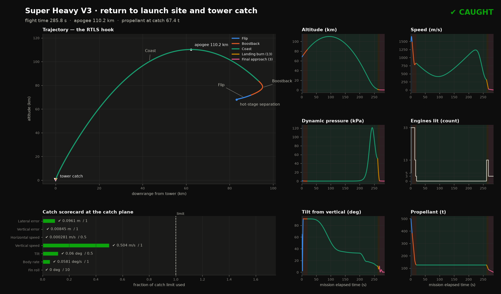
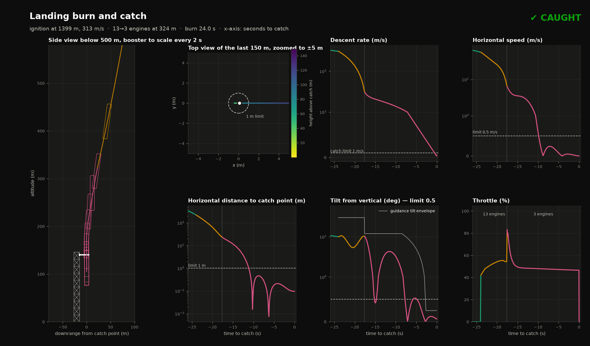
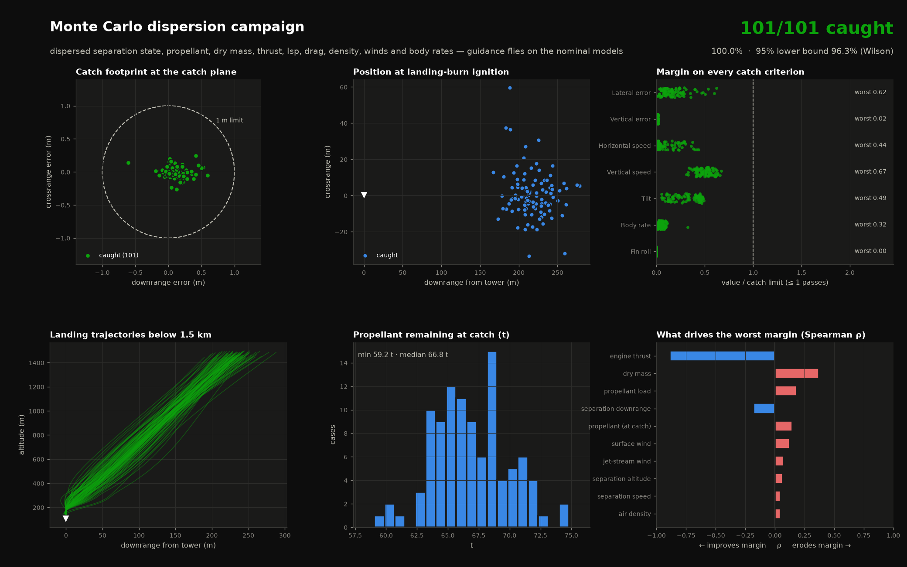

A 6-DOF, quaternion-based simulation of a Super Heavy V3 booster from hot-stage separation to the chopstick catch. It has closed-loop guidance for every phase, a 100-case Monte Carlo campaign and a 3-D render of the full flight.
Boostback in real time, coast at 12×, the last 8 km at 3×, then the landing burn and catch in real time. Rendered frame by frame with Three.js in headless Chromium.
Results
101 / 101dispersed cases caught (seed 42)
96.3%95% lower bound on catch rate (Wilson)
0.62 mworst lateral error (limit 1 m)
1 / 41catches with the original guidance
Mission overview

Trajectory hook, phase-coloured time histories and the catch scorecard.

Landing burn: to-scale side and top views, descent rate, horizontal speed, tilt against the guidance envelope, and throttle.
Monte Carlo robustness
Each case plans on the nominal models, flies a dispersed truth plant and guides on what it can measure in flight. Dispersions cover separation state, per-engine thrust, Isp, mass, drag, air density, surface winds up to 12 m/s, jet streams up to 60 m/s and wind-forecast error.

Footprint, ignition dispersion, margin on every criterion, landing trajectories, propellant and sensitivity. Download the raw CSV.
Catch criterion
Limit
Median
95th pct
Worst
Lateral error
1 m
0.15 m
0.47 m
0.62 m
Horizontal speed
0.5 m/s
0.02 m/s
0.18 m/s
0.22 m/s
Vertical speed
1 m/s
0.50 m/s
0.62 m/s
0.67 m/s
Tilt
0.5°
0.17°
0.24°
0.25°
Body rate
1°/s
0.04°/s
0.10°/s
0.32°/s
Vertical error
1 m
0.01 m
0.02 m
0.02 m
Fin roll
10°
0.00°
0.00°
0.00°
From 1/41 to 101/101
The starting point caught the booster on the nominal trajectory, but a 2 km shift in the separation point missed the tower by about 1 km. Each fix below came from a diagnosed failure:
Continuous boostback predictor. Stage switches now land exactly on step boundaries, and an Illinois-secant solver re-solves cutoff time and heading every 1.5 s during the burn.
In-flight estimation. IMU-style thrust-to-mass and tank-gauge mass-flow estimators remove the dominant thrust and Isp dispersion errors.
Grid-fin entry guidance. Predicts the arrival point and commands angle of attack within fin authority, using a wind forecast and an in-flight drag estimator.
Unified landing law. Energy matching to a gate, then one constant-deceleration arc into the chopsticks, with a 3-D thrust-vector solve that includes estimated drag and lift.
Disturbance observer. Cancels steady surface wind at the catch by comparing measured acceleration with what the actual thrust vector should produce.
Attitude and roll. A controlled RCS slew to engines-first during the coast, with catch roll set in vacuum and locked through the burn.